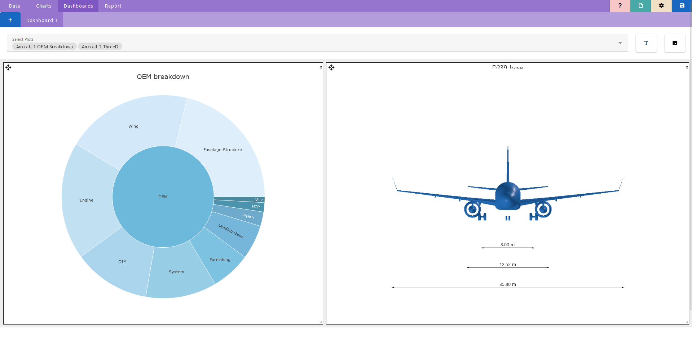
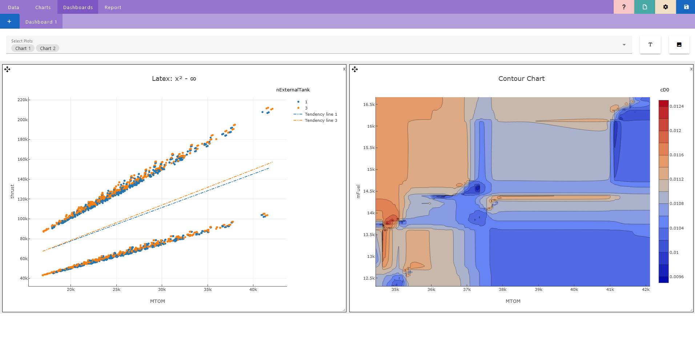
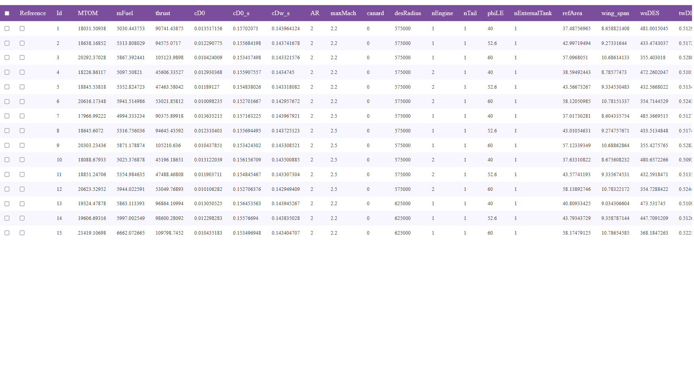
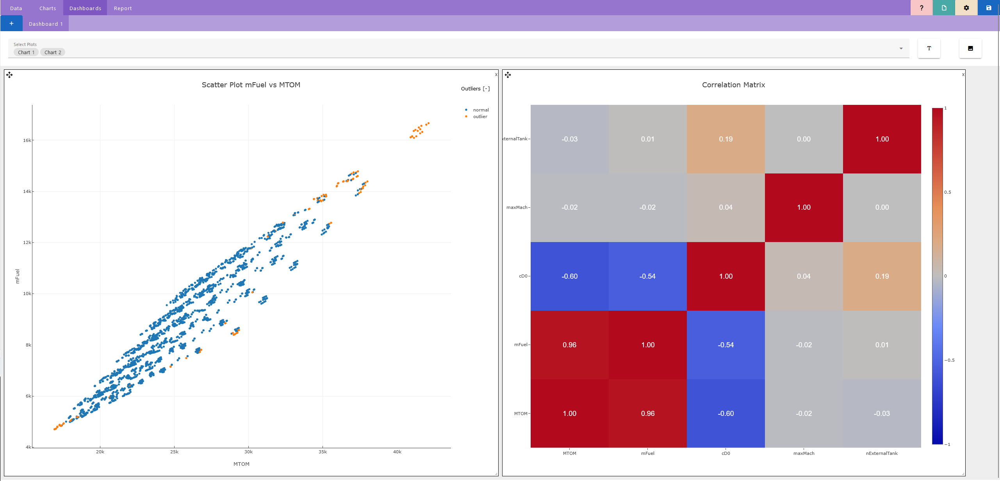
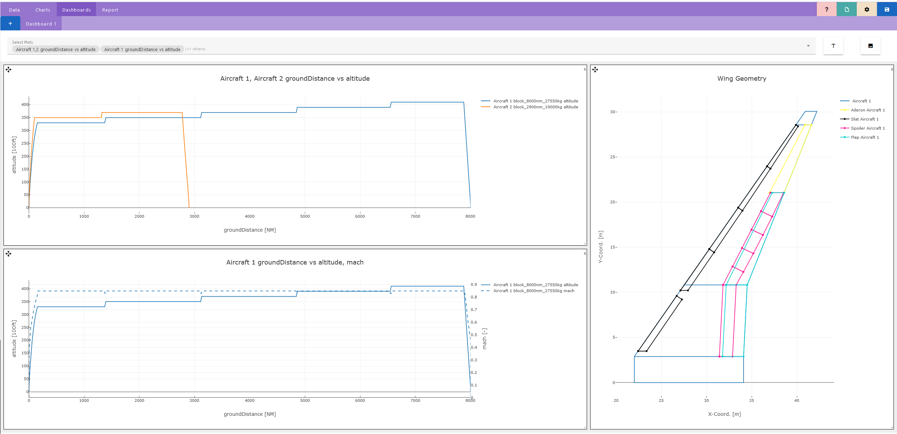
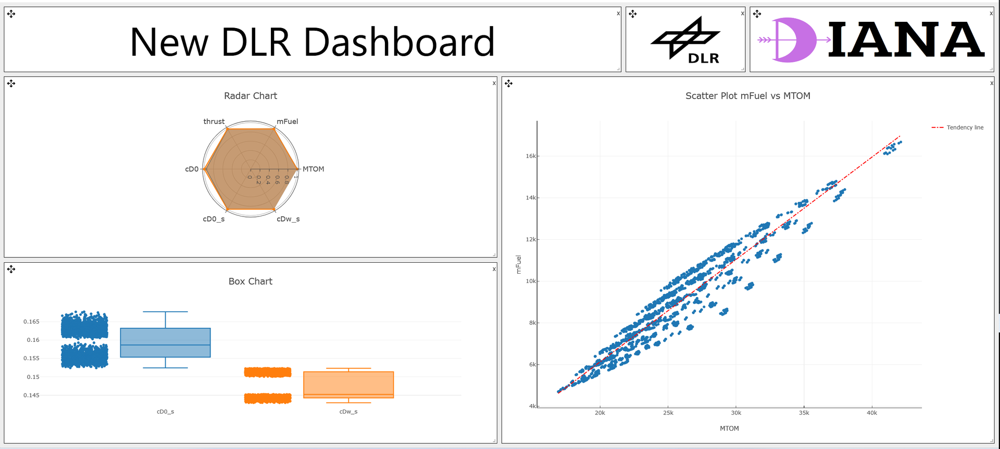

DIANA 2.3 – September 2025
Posted by DIANA development team · September 03, 2025 · Status: Released
Overall Aircraft Design New features
- • Adapted the reading process to CPACS 3.5.
- • The OEM chart. can be done independently from the MTOW
- • Measures can now be added automatically to the aircraft views
- • MTOW chart bugs were fixed

New charts
- • Contour charts have been added.
- • Multitendency lines are now permitted

Extra features
- • Select all functionality added to the data table
- • Titles and Axes names can be now modified in all charts

Planned for upcoming versions
- • Movables for HTP and VTP.
- • Explainable data analysis
- • IM2 project updates
We hope you like all the updates and we will be looking forward to bringing you new capabilities soon. I hope you had/are having a nice vacation.
DIANA 2.2 – July 2025
Posted by DIANA development team · July 15, 2025 · Status: Released
Data Analysis Improvements
- • Introduced correlation matrices and heat maps.
- • Added automatic outlier detection.

Trajectories and Aircraft Design Enhancements
- • New combine option for multiple aircraft or missions.
- • Support for dual Y-axes.
- • Individual chart settings.
- • Automatic re-generation of aerodynamic polars on mismatch.

New Features and Fixes
- • Added Wing Movables visualization.
- • Bugfix: Save project issues resolved.
- • Known issue: Tigl3 bug — use workaround in README.
Planned for Upcoming Versions
- • OEM and Fuel Mass breakdowns (in progress).
- • Engine/aero performance maps, cost breakdowns.
- • Enhanced Explainable AI feedback for outliers and clustering.
Thanks to everyone for feedback — development continues after the summer break.
DIANA 2.1 – June 2025
Posted by Raúl · June 06, 2025 · Status: Released
“First of all, thanks for the brainstorming session of today.This release introduces new data analysis tools.”
Data Analysis Features
- • Tendency Lines (regression analysis).
- • Box plot and Radar charts.
New dashboard Features
- • Now it is possible to add custom images and texts to the dashboard

Thanks for your feedback — keeps improving DIANA step by step!